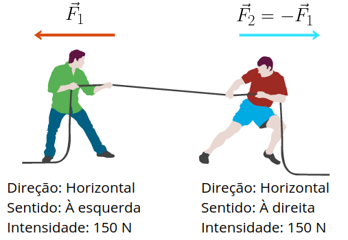
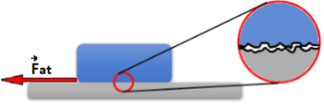
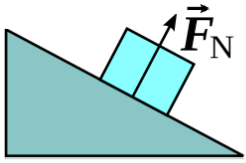
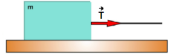

Aula2-11: Introdução à dinâmica e primeira lei de Newton
Força
Trata-se de uma interação entre entes físicos capaz de acelerá-los, deformá-los ou equilibrá-los.
Na primeira das imagens temos um morteiro. O míssel, quando liberado à beira do tubo, percorre-o até o fundo, onde aciona um pino que desencadeia uma explosão. Neste instante, gases se expandirão e empurrarão o projétil, acelerando-o para fora do tubo. Na segunda imagem, uma prensa hidráulica esmaga um objeto de plástico, deformando-o. De último, temos uma imagem de uma gangorra com pedras; neste sistema, forças agem para cima e para baixo de modo a equilibrar as pedras
|
|
||

A força é uma grandeza vetorial, isto é, para ser satisfatoriamente representada, necessita de três informações. São elas: Direção, sentido e intensidade. Tais valores são integralmente informados pela representação vetorial. A intensidade deste vetor será medida, no SI, em newtons. Veja o exemplo abaixo:
|
 |
Estão representadas algumas das forças que agem sobre a corda. Observe que as forças exercidas são ambas horizontais e de igual intensidade ou magnitide, divergindo, então, apenas pelo sentido. |
Principais forças da dinâmica |
|
|
Peso: Força de origem gravitacional, de ação à distância. Esta força é dada pela seguinte fórmula: |
|
|
Força de atrito estático e dinâmico: Força proveniente da rugosidade existente entre duas superfícies potencialmente deslizantes entre si. Chamamos força de atrito estático, essa força, antes do deslizamento; chamamos de atrito dinâmico a força durante ele. |
 |
|
Normal: Força exercida por uma superfície em um corpo que a impinge, também, uma força. |
 |
|
Tensão: Força exercida por cordas, cabos, corrente e similares. |
 |
Força resultante

Raramente um corpo está submetido a ação de apenas uma força, segue-se, daí, a necessidade de trabalharmos com a força resultante.
A força resultante é a força que resulta da soma vetorial de todas as forças que agem sobre o corpo estudado.
Na imagem acima, ilustramos apenas as forças que agem sobre a pedra horizontal, a soma vetorial destas forças, neste caso, como podemos observar, resulta em 0 N.
Primeira lei de Newton (princípio da inércia)
É empreendimento árduo rastrear o nome do primeiro cientista a conceber com a correção e a abrangência necessárias o princípio da inércia. Sabemos que o filósofo medieval francês Jean Buridan (★ 1301 — 1358 ✝) empenhou-se em formular uma competende descrição da natureza que muito se assemelhava a hoje conhecida primeira lei de Newton. Mais tarde, Leonardo Da Vinci (★ 1452 — 1519 ✝) também dedicou-se numa formulação rudimentar disto que estamos a tratar. Ainda mais adiante, Galileu Galilei (★ 1564 — 1642 ✝) versou sobre o mesmo princípio, tratando-o com mais rigor e, por conseguinte, dando-lhe maior credibilidade. O contemporâneo de Galileu e prestigiado filósofo, cientista e matemático René Descartes (★ 1564 — 1642 ✝) também produziu formulações acerca do mesmo tema. Em 1687, Isaac Newton (★ 1642 — 1727 ✝) publica o livro Princípios Matemáticos da Filosofia Natural. Neste livro, são apresentadas as três leis de Newton, dentre elas o princípio da inércia; a lei da gravitação universal e mais uma vastidão de teoremas matemáticos. O prestígio de Newton e o rigor matemático e filosófico a que ele costumeiramente emprestava a suas formulações acabaram por conceder-lhe a fama de progenitor de tal princípio, batizando o princípio da inércia de, também, primeira lei de Newton.
O fenômeno:
Todo corpo que possui massa naturalmente tende a resistir à alterações em sua velocidade. A grandeza que indica essa oposição a mudança de velocidade é chamada massa inercial. Em outras palavras, podemos afirmar que um corpo nunca tem a sua velocidade alterada espontaneamente. Pois para que isso ocorra – para que sua velocidade se altere –, é necessário que uma força externa resultante aja sobre ele.
O enunciado:
Um corpo que está parado permanecerá parado, um corpo que está em movimento retilíneo uniforme permanecerá nesse movimento na ausência de forças resultantes agindo sobre ele.
Pseudoforças
Na imagem ao lado, o carro freia, reduzindo a sua velocidade, o eletrodoméstico mantém a sua velocidade (lei da inercia). A impressão é a de que o eletrodoméstico foi arremessado para frente por uma força estranha. Pois bem, esta força, na verdade, não existe; entretanto, há quem se refira a esta impressão de força como sendo uma força fictícia, uma força de "mentira" ou, então, uma força inercial.